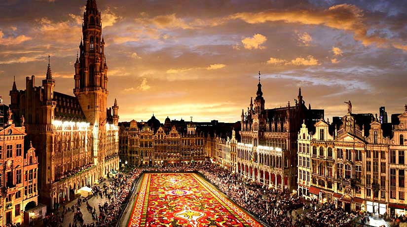
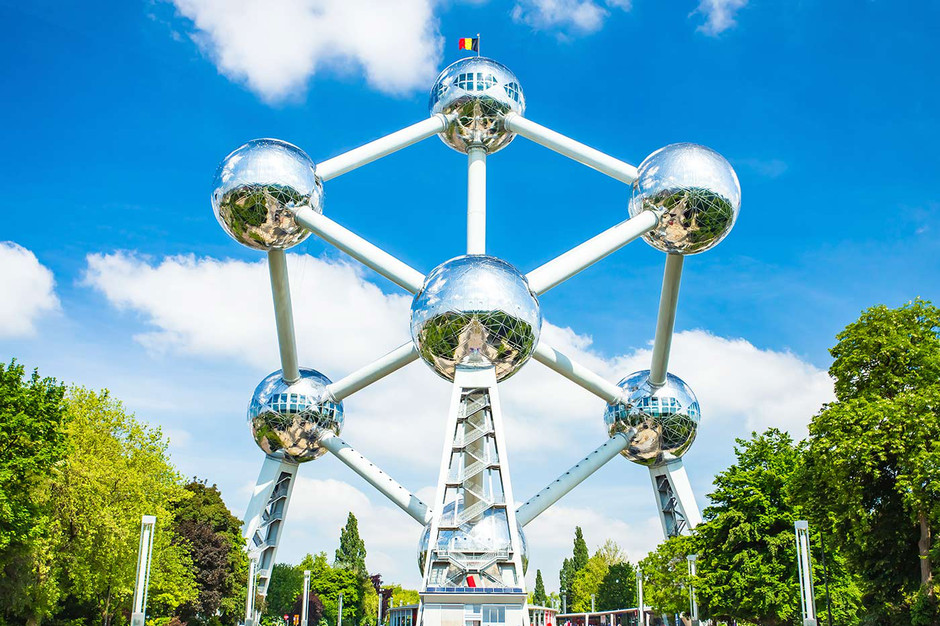

Bruselas es la capital de Bélgica, y la principal sede administrativa de la Unión Europea. Bruselas es un municipio situado en la región administrativa "Bruselas-Capital" que es una de las tres regiones de Bélgica, con la Región Valona y la Región flamenca.
Como capital del Estado, Bruselas es la sede del gobierno y el Parlamento. Alberga también, el Castillo de Laeken la residencia de Su Majestad el rey Felipe de Bélgica y la familia real belga.
Durante la Alta Edad Media, el territorio en donde está emplazada la ciudad de Bruselas era un área pantanosa con abundantes arroyos que formaban islas. En la más elevada de las islas se erigió una ermita, y en torno a la ermita luego se formó un burgo. En neerlandés medieval broek (pronúnciese [bruk]) significa pantano y sell significa ermita; esto es, la etimología de la ciudad de Bruselas es: "Ermita del pantano". Otros, sin embargo, sostienen que en un principio la ciudad se hallaba en la Montaña de San Miguel y estaba habitada por los celtas antes de que fuera ocupada por los francos. De hecho, tiene una etimología muy próxima a la de la ciudad de la Galia Cisalpina «Brixellum», actual Brescello, que deriva de «briga» (altura) y «cella» (templo), es decir, "templo en las alturas".
La ciudad de Bruselas contiene en su seno cantidad de monumentos y museos notables, además de ser considerada el núcleo de galvanización de la historieta franco-belga, cuyo premio entrega anualmente, así como uno de los principales mercados mundiales de antigüedades. Su patrón es San Miguel.
La arquitectura de Bruselas es muy variada y cuenta con estilos que van desde las construcciones medievales de la Grand Place hasta los modernos y vanguardistas edificios de las instituciones de la Unión Europea.
Las principales atracciones incluyen la famosa Grand Place, Patrimonio de la Humanidad por la Unesco desde 1988, con el Ayuntamiento de estilo gótico en el centro, la Catedral de San Miguel y Santa Gúdula y el Castillo Real de Laeken, con sus grandes invernaderos. En el entorno de la plaza se pueden observar las trazas de la antigua ciudad, de un estilo arquitectónico que en el país se conoce como estilo español, dado que los principales edificios históricos de estilo flamenco datan de la época en que la actual Bélgica, entonces Flandes, era una de las provincias del imperio de Carlos V. Otro emplazamiento notable es el Palacio Real de Bruselas.
El centro de la ciudad es conocido por sus edificios de estilo flamenco, además del enorme Palacio de Justicia de estilo neobarroco y particularmente las casas del estilo Art Nouveau realizados por el arquitecto Victor Horta. En el apogeo de este estilo, fueron desarrollados los nuevos suburbios de Bruselas, donde destacan los edificios de Schaerbeek, Etterbeek, Ixelles y Saint-Gilles. Otros ejemplos de este estilo es el palacio Stoclet, obra del arquitecto vienés Josef Hoffmann y declarado Patrimonio de la Humanidad en el año 2009.
El Atomium, construido para la Expo'58, es uno de los símbolos de la Bruselas moderna, con sus 103 metros de alto. Consta de nueve esferas de acero conectadas por tubos. Cerca de la mítica estructura se encuentra el parque Mini-Europa, con maquetas a escala 1:25 de los edificios más famosos de Europa.
Por otra parte, el Manneken Pis es una fuente de bronce de un pequeño niño orinando y que se ha convertido en otro de los símbolos históricos de la ciudad. Otros lugares importantes de Bruselas son el Parc du Cinquantenaire con sus arcos del triunfo y sus museos cercanos, la Basílica del Sagrado Corazón, la Bolsa de Bruselas, el Palacio de Justicia y los edificios institucionales de la Unión Europea. La Estatua de Europa (Unity in Peace) de la Comisión Europea en el jardín Van Maerlant (del escultor francés Bernard Romain) Etterbeek,
Los Museos reales de Bellas Artes de Bélgica son los más conocidos, con un Museo de Arte Antiguo y otro Museo de Arte Moderno, además de dos museos menores, dedicados en exclusiva a los pintores belgas Constantin Meunier y Antoine Wiertz, respectivamente. También podemos visitar la casa museo de Victor Horta, principal representante del modernismo belga.